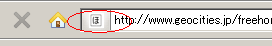

スタイルシートでホームページのデザインを変更
ホームページの色彩やレイアウトなどのデザインを変更する場合はスタイルシートで一括して変更しましょう。スタイルシートは、index.cssなどの拡張子が「.css」になっているファイルのことで、htmlファイルのheadタグ内でそのURLが指定されています。
例えば、このページで使用するスタイルシートは以下の箇所で指定されています。
<link rel="stylesheet" href="/entry.css" type="text/css" />
これはつまり、こちらのファイルのことです。
https://www.homepage-tukurikata.com/entry.css
このファイルの内容を変更することで、このページのデザインを変更することができます。
もし、サイト内の全てのページで同じスタイルシートを指定していれば、そのCSSファイルひとつを修正するだけで、全てのページのデザインを一括して変更することができます。
これがスタイルシートを使用する最大のメリットといえます。
実際にCSSを作成する際には、ファイル名を「任意の英数.css」にして作成し、それを適用するhtmlファイルのhead内に、上記のようにて記述して設定すればＯＫです。
CSSにカラーコードを指定して色彩の変更する
前のページの無料テンプレートのスタイルシートには、このサイトと同じものが入っているので、色彩やレイアウトを変更して、オリジナル感あふれるホームページを作成しましょう。
このスタイルシートで色彩を指定している箇所は、#E9F6F4; など、シャープのあと６桁の数字になっています。この６桁の数字を変更することで色彩を変更することができます。
色彩の数字コードがわからない場合はパワースポイトなどの無料の色彩採取ツールをダウンロードして、こんな色にしたいという色彩の数字コードを調べてみると分かりやすいです。
採取したい色彩にカーソルをあわせ、スペースキーを押せば数字コードが表示されます。
body の background-color やタイトルであるH1の色彩、font-size の大きさを変更するだけでもかなり印象が違ってくるでしょう。
例えば、背景色を紺色の「background-color:#2D526D;」に変えた場合、このようになります。
【実際のカスタマイズ手順の例】
当ホームページのサンプルを使って、デザインをカスタマイズする際の実際の手順をこちらのページでご紹介しています。
【スタイルシートカスタマイズの例：その２】
シンプルな感じのスタイルシートもおすすめです。サイドバーなどをなくして、テキストコンテンツがメインのシンプルなCSSにするのもよいでしょう。
CSSに背景画像を設定してデザインを変更する
ヘッダーの背景画像を挿入したり、アイコン素材を挿入することによっても、ホームページのイメージを大きく変えることができます。
デジカメで撮影した画像や写真をホームページ背景に設定してみるのもよいでしょう。
写真画像を差し込む場合は読みにくくらならい程度にヘッダーあたりに挿入するのがおすすめです。このホームページにヘッダー画像を挿入してデザイン変更するとこのような感じになります。
また、デジカメをもっていなくて写真画像がない人でも、ホームページ素材をネット上で購入できます。あるいは、グラデーション素材をホームページの背景画像に設定するとわりとおしゃれな感じに仕上がるかもしれません。
グラデーション素材の箇所も参考に、自分で作成したり、ウェブ上で無料配布されているものを使用されてみるとよいでしょう。
ファビコン使用で個性のあるホームページ作り
ホームページを閲覧するときには、ブラウザ上にファビコンが表示されているサイトもあるかと思います。あるいは、お気に入りに登録しておくと表示されるアイコンみたいなのがファビコンになります。

これは拡張子が「.ico」の画像ファイルを作成し、そのURLをhead内に指定することで表示されるようになります。
ただ、ブラウザによっては見えないこともありますし、なくても大したデメリットはありませんので、設定していないサイトも多いです。
ロゴマーク的な意味合いのものになりますが、気が向いた時にでも作成してみるとよいかもしれません。ファビコンはウィンドウズに付属しているペイントなどを使用することで簡単に作成できます。
ホームページタイトルのバナー画像の作り方
タイトルがテキストのものだと味気ないものですが、画像を使うとおしゃれです。
Photoshopやgimpなどのツールを使うと、このようなバナーを簡単に作成することができます。


作り方についてはこちら。
サイトのロゴ画像の作り方
画像が完成しましたら、ロゴマークとしてトップページにリンクしておくとよいでしょう。ただ、検索エンジンは画像の文字が判別できませんので、画像の「alt」の部分には、テキストでもサイトタイトルを入力しておくことをおすすめします。
cssスタイルシートでレイアウト幅を変更
次にcssスタイルシートで、サイドバーやコンテンツの部分のレイアウト幅を変更することができます。
ヘッダーやコンテンツの部分、あるいはサイドバーなどについては、こちらのページをご参照ください。各要素に対応する箇所をスタイルシート上で探し、その箇所のwidthで指定されている横幅の長さの値を変更するとよいでしょう。
例えば、当サイトのサイドバーの部分は、html上では<div id="sidebar">の部分にあたりますが、この箇所のデザイン面を指定しているのはCSSファイル上の#sidebar{width:300px;}の箇所にあたります。このwidthの値を大きくすれば、横幅が広くなりますし、小さくすれば狭くなります。
ただし、大きくする場合は、このサイドバー自体を格納しているホームページ全体のouterの部分の横幅も広げないと、はみ出したり、くずれたりしてしまいますので注意しましょう。
概ね、横幅の長さは900px～1000px程度の長さが主流になってきておりますが、サイドバーなしで１コラムだけのシンプルな場合は600px～700px程度でも十分かと思います。サイドバーにバナー広告を掲載する場合、サイドバーの幅を300pxに設定しておくと、掲載可能なバナーも多くなるかと思います。